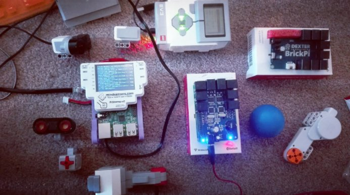

Introduction
What is EV3Dev-lang-java?
In Lego Mindstorms ecosystem, the default solution to develop Java
software for Lego Mindstorms is LeJOS. But now
exists one alternative, EV3Dev-lang-java a Java project running on the
top of EV3Dev.
Lego Mindstorms ecosystem is
a nice educational way to learn Java programming in general and Robotics in particular.
Now, it is possible to install a complete Linux distro in the third
generation of the product and others companies like
Mindsensors &
Dexter Industries has released
products which interact with Sensors & Actuators from Lego ecosystem and
that boards can use the Power of the popular board
Raspberry Pi 3
But, with the help of EV3Dev, it is possible to have the same Linux
experience for multiple boards. So… why not develop a Java library for
that Linux Distro? The answer is EV3Dev-lang-java. The project, takes
the good things of both worlds: EV3Dev with the complete linux
experience and LeJOS with the rich local navigation stack.

What libraries contains EV3Dev-lang-java?
The project contains the following Java libraries/scripts:
-
EV3Dev-lang-java: Low level interation with EV3Dev
-
lejos-commons: LeJOS interfaces & utilities
-
lejos-navigation: LeJOS navigation stack
-
RPLidar4J: RPLidar A1 support
-
Battery Monitor: A battery monitor to protect your hardware against low battery levels
-
Installer: A set of Bash scripts to automate some operations with your brick
Advantages of the usage of this project?
Basically, with this library you can develop educational robots with Java for multiple bricks:
-
EV3 Brick
-
BrickPi+
-
BrickPi 3 (Scheduled on v0.7.0)
-
PiStorms
Using the same objects, it is possible to deploy the software for robots on EV3 Brick, Raspberry Pi 3 with BrickPi & PiStorms.
If you analyze the hardware, any EV3 Brick uses a
SoC: Sitara Processor AM1808 (from year 2010) to manage Sensors &
Actuators but now with the usage of a BrickPi/PiStorms unit, it is
possible to use the power of a Raspberry Pi 3 increasing the
possibilities to develop complex projects which require por
Computational consumption.
2010 Chip included on EV3 Brick:
SoC: Sitara Processor AM1808 CPU: ARM9 300MHz RAM: 16KB of Instruction Cache, 16KB of Data Cache ,8KB of RAM (Vector Table), 64KB of ROM
2016 Chip included on Raspberry Pi 3:
SoC: Broadcom BCM2837 CPU: 4× ARM Cortex-A53, 1.2GHz RAM: 1GB LPDDR2 (900 MHz)
Features included in the whole project
Java features
-
Automatic installation of Oracle Java JDK 8 for Brickpi+/PiStorms
Raspberry Pi 3 -
Partial installation of Oracle Java JRE 8 for EV3 Brick
-
OpenJDK Java 9 EA support for Brickpi+/PiStorms + Raspberry Pi 3
-
Java profiling tools Support (Oracle mission control & JConsole)
-
Logging support based on SLF4J
-
Centralized logs with Kibana
Platforms supported
-
EV3 Brick,
-
PiStorms v2,
-
BrickPi+
-
BrickPi 3
Lego Mindstorms features
-
Regulated Motor Support (Large EV3 Motors, Medium EV3 Motors, NXT Motors)
-
Unregulated Motor Support (RCX Motors)
-
Sensor Support (EV3 sensors)
-
Sounds Support
-
EV3 LCD Support
Robotics
-
Automatic installation of OpenCV
-
eSpeak TTS (Text to speech) Support
-
LeJOS Sensor filter Support
-
LeJOS local navigation stack Support
-
RPLidar A1 (2D Lidar) Support